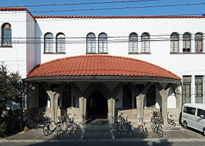

新聞記事によれば、いまや大ピンチという感じの麻雀荘....(/_；)、なにしろ 現時点では風適法*という法律の規制対象となっている。
＊風適法 → http://law.e-gov.go.jp/htmldata/S23/S23HO122.html
対象になっている理由は、麻雀が「射幸心をそそるおそれのある遊技」だからだそうな.... しかし先日、当HPの読者で京都大学のOBという人から驚愕のメールをいただいた。なんと そんな法律を作った政府が、かって国営雀荘とも言える施設を有していたという.....(゜0゜)
京都大学といえば明治30年(1897A.D.）開学の名門大学。大正14年（1925A.D.)、その京都大学の吉田南構内（通称 吉田南キャンパス）に、「楽友会館（らくゆうかいかん）」という学生交流用の施設が建設された。現在 見ると、いかにも大正末期に建てられた感じのレトロな２階建て。

学生交流のための施設ということで、レストランのほか 卓球やビリヤードの施設があった。このような施設が作られた理由は、どうやら「帝大生にふさわしいたしなみを身につけるため ＆ 学生同士の交流を深めるため」ということだったらしい。そしてこの楽友会館の中に麻雀ルームが存在した。国立大学といえば、国が税金を使って設立した大学*、その中に存在したとなれば、立派な国営施設。＊2004年4月1日から「国立大学法人の設置する大学」。
もちろん麻雀施設といっても、用意された麻雀卓で学生がゲームしていただけ というのであれば国営雀荘とはいえない。それだけなら単なる麻雀ルーム。もちろん緑風荘とか三元荘などという、雀荘としての名前があったわけでもない。しかし１時間幾らで使用料（雀代？）を取っていたとすれば、これは立派な営業雀荘....(^-^；
使用料は、平成３年当時で１卓１時間 300円くらいだったらしい。いくら20年前だとしても、これは かなり格安。しかし300円だろうとなんだろうとタダではない。そこで友人の下宿などでゲームを楽しむ学生も大勢いた。しかし麻雀ルームを利用する京大生は、「これぞ全国唯一の国立雀荘」として大いに誇りにしていたという。
残念ながら この国営雀荘(？)、いつ頃から存在したのか さだかではない。
麻雀は大正末期（T10以降くらい）に、本格的に伝来した。そこで「帝大生が身に付けるべきたしなみ」の一つとして、竣工当初から存在した可能性もある。しかし爆発的に普及したのは昭和に入ってから。そこで、さすがに竣工当時には存在しなかったかも知れない。
いつから営業？していたのか不明であっても、終わりはほぼハッキリしている。1991（H 3）年の３月にはビリヤードなどとともに利用中止となったらしい。その後はしばらくは
会議室とレストランのみの使用となった。さらに５年ほどしてからは、コンピュータを使うための建物ということになってしまった。おそらく現在でも そのように使われていると思われるが、定かではない。
|